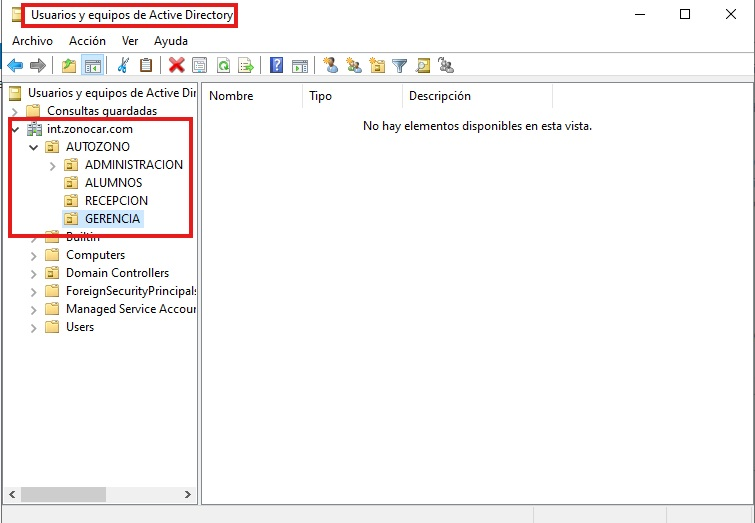
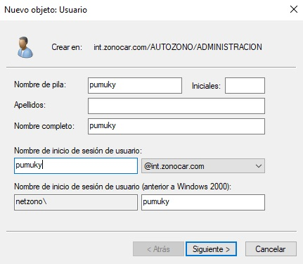
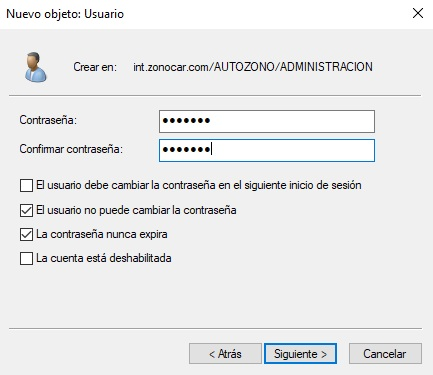
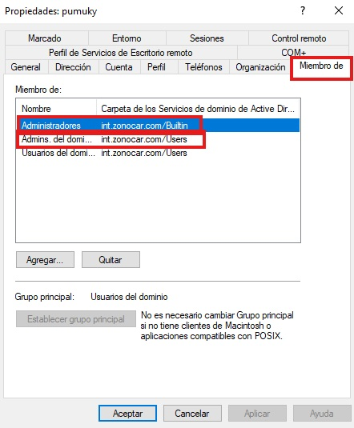
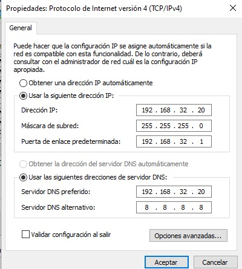

Crear Usuarios
Configuración
Ya tenemos creado el dominio ahora procederemos a crear los usuarios
aunque antes de crear usuarios en el dominio debemos hablar de
"Unidades Organizativas" (OUs). Las OUs son carpetas y subcarpetas en
las que podemos distribuir y organizar todos los elementos del dominio
como usuarios y equipos.
Conceptualmente es muy parecido a los grupos que ya conocemos de
permisos de usuarios, pero en este caso engloba también a los equipos
y puede tener OUs anidadas.
Aunque tenemos un contenedor llamado "usuarios" no es buena idea crear
los usuarios allí porque no es una OU y no podremos asociar fácilmente
una política de grupo.
En cambio, las OUs sí que están pensadas para que se pueda aplicar en
ellas una política de manera sencilla. Para la creación de OUs hay
muchas buenas prácticas.
En general la idea es crear OUs por departamento, ubicación física o
tipo de usuario. Todo dependerá del escenario particular.
Desde el "Administrador del servidor" pincharemos en el menú
"Herramientas" y seleccionaremos "Usuarios y equipos de Active
Directory" Desde dentro de la zona de trabajo de nuestro dominio,
usaremos el botón derecho del ratón para añadir una "Nueva" "Unidad
Organizativa".
En mi caso he creado una unidad organizativa general y cinco para
Administración, Gerencia, Recepción, Monitores y Alumnos.

Ahora ya podemos crear los usuarios dentro de cada Unidad
Organizativa, (OU).
El mecanismo es muy sencillo.
En primer lugar, desde “Herramientas”, “Usuarios y equipos de Active
Directory” abrimos la OU donde queremos guardar el usuario y en la
zona de trabajo pinchamos con botón derecho, nuevo, usuario.
Aparecerá una ventana para poder escribir su nombre completo y su
usuario.

En la siguiente ventana tendremos que escribir una contraseña para
ese usuario en mi caso “123.abc”.
Por sencillez eliminaré la
obligación de cambiar la contraseña en el primer inicio de
sesión.
Le damos a finalizar y tenemos un usuario creado.
Para Administración voy a crear un usuario Pumuky.
Para Gerencia voy a crear un usuario Rayo.
Para Recepción voy a crear dos usuarios Mate y Don.
Para monitores voy a crear a tres usuarios Phil, Max y Bruce
Para Alumnos voy a crear a cinco usuarios Pepe, Pepa, Nico, Noel y
Zoe.

Bien ahora voy a darle permisos a Pumuky para que pueda loguearse en
el server 22 para ello le doy doble click sobre Pumuky, vamos a la
pestaña de miembro de y al botón de agregar, nos aparecerá un
apartado donde podemos buscar los grupos en los cuales queremos
añadir a nuestro usuario, en este caso lo voy a meter en los grupos
Administradores y Administrador de dominio.
Le damos en aplicar y aceptar y listo, ya nos podemos loguear en la
máquina servidor.

Ahora he tenido un pequeño problema con internet, no me iba por
culpa de las DNS, hay que volver a configurarlas, me ha quedado asi:
Servidor DNS preferido 192.168.32.20
